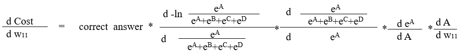

Yeji Park
Character Recognition
(using Artificial Neural Network)
0. Problem description
According to given picture which contains one written number among 0 to 9, It will recognize the number from the picture.
Ex) The picture below is the size of 28*28, has 784 pixels. Each pixel contains information of location and the brightness.
By combining these two information, the picture is determined what number it is. Forwawrd and back propagation are used when the model is made.
Forward propagation
Forward propagation is inferring the value using a model created based on input values and answer.
Each node in the neral network is called perceptron.
Input perceptrons affect perceptrons in the next layer, and this perceptrons in the next layer affects perceptrons in its next layer.

Each perceptrons in the input layer are used to make perceptron in the next layer. The values of each perceptron are multiplied by weights and is summed up to make perceptrons in the next layer.
The result of summation then becomes the input of activation function such as sigmoid, ReLu, and softmax(only at the last layer, in classification problems).
Creating the right model is largely related to finding right weights. Input values are given, therefore by changing weights, proper model can be made.
Evaluating errors is different based on the type of problems. Usually, Regression uses sigmoid function to evaluate erros, and Classification uses reLu and sigmoid function.(이거 좀 뇌피셜..)
Since we are dealing with the classification problem, we will look how to back propagate ANN that uses ReLu and Softmax function.
Then, How can we find proper weights? It can be done by evaluating errors of a current model, and changing its weights based on errors.
Back propagation can conduct this action.
However, We cannot find proper weights at one go. The initial weights are randomized and then it slowly changes over time.
In the classification problems, the last output is made by using cross-entropy and softmax function.

 (Click more to read) When the last output was from the sigmoid function
(Click more to read) When the last output was from the sigmoid function
How do we know how much errors we have in this model?
If we simply add the errors?
0.2+0.1+0.2+(-0.9)+(0.05)+0.25+0+0.05+0.05+0 = 0.5 +(-0.9) +0.3 =
-0.01
the errors is only -0.01. It is becuase some nodes have different sign, so they cancel out each other's errors.
To avoid this, Squaring each errors and then add.

0.2
2+0.1
2+0.2
2+(-0.9)
2+(0.05)
2+0.25
2+0
2+0.05
2+0.05
2+0
2=
1.01
The evaluation function we will use here is 1/2(correct answer-estimated answer)
2
(1/2)*1.01 = 0.505
error for this case
Back-propagation
Back-propagation is the process of neural network finding right weights.Depending on how much each node contributes to the total error.
we will focus on 1. How much error each node contributes 2. How much weight should be updated
Back-propagation starts from the nodes from the output layer. These nodes can be evaluated by seeing how different it is from the right answer, and this differences can represented with one number by using cost function(evaluation function)
There is 784 input nodes. The value of each input node represents as number 1 or 0, which is the information of brightness of pixel.

Moment slope = Deritives.In this case, We want Moment slope to be negative.
y = cost function(w11,w12,...w41,w42)
purpose : minimize 'y' value
There is two posibility, wheter increase the w11 value or decrease. *delta is very small number.
1.cost function(w11 + delta,w12,...w41,w42) 2.cost function(w11 - delta,w12,...w41,w42)
If the 'y' value of case 1 is less than current value, this is the way to go, or it is more than current value, then the opposite way is what we should take.We can relate this to differentiation.


빠트린거!